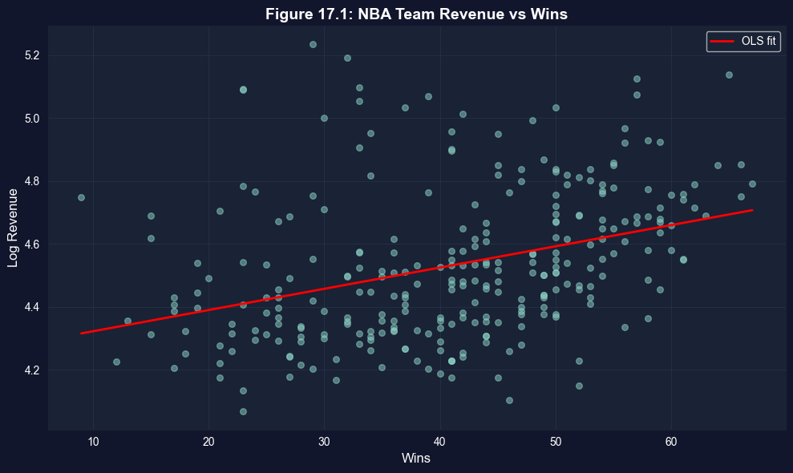
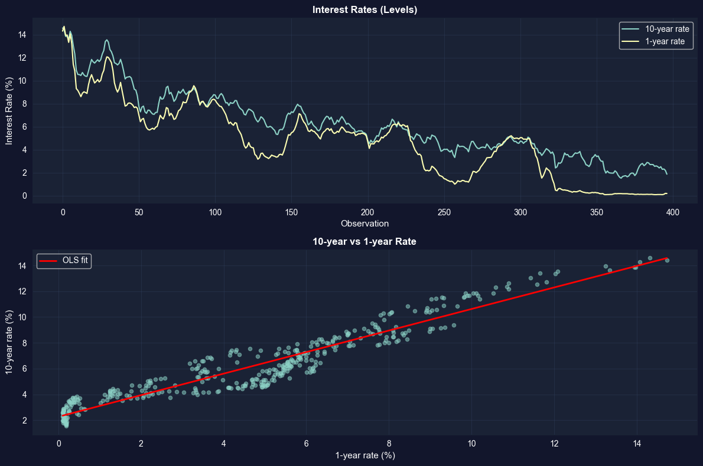
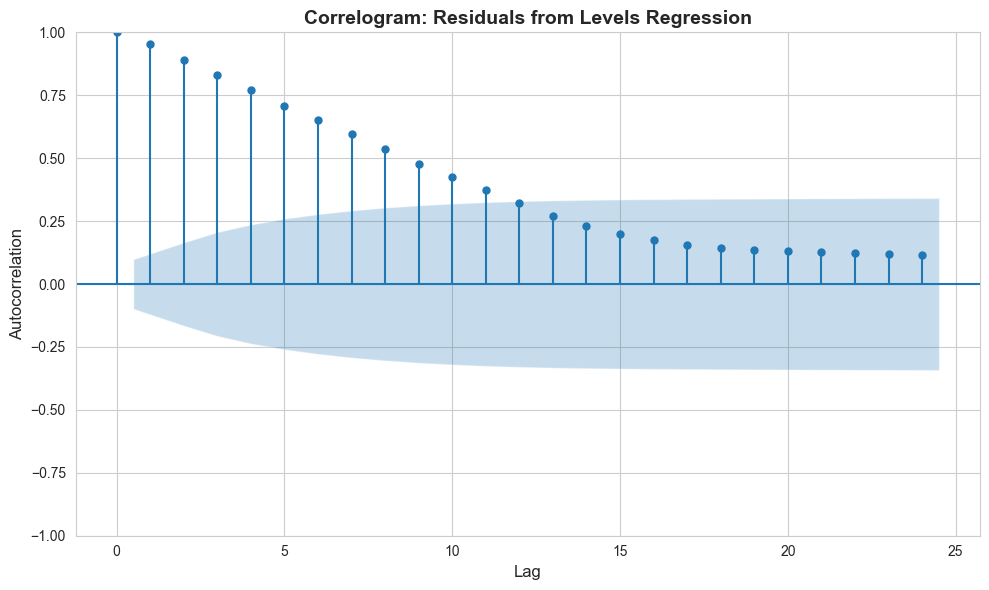
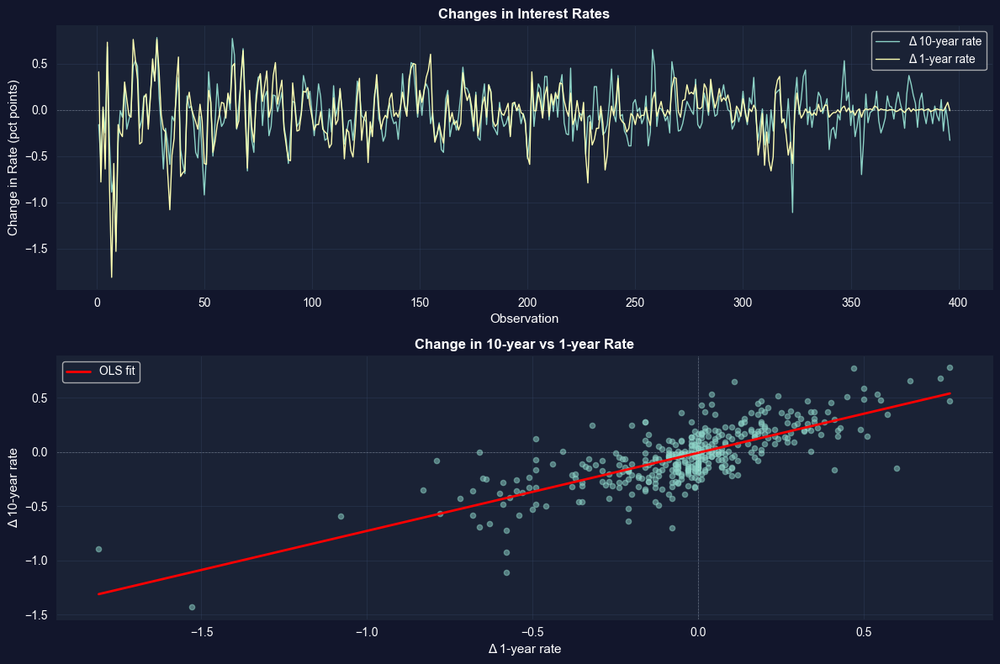

This notebook provides an interactive introduction to panel data methods, time series analysis, and causal inference. All code runs directly in Google Colab without any local setup.
This chapter focuses on three important topics that extend basic regression methods: panel data, time series analysis, and causal inference. You’ll gain both theoretical understanding and practical skills through hands-on Python examples.
Learning Objectives:
By the end of this chapter, you will be able to:
Apply cluster-robust standard errors for panel data with grouped observations
Understand panel data methods including random effects and fixed effects estimators
Decompose panel data variation into within and between components
Use fixed effects to control for time-invariant unobserved heterogeneity
Interpret results from logit models and calculate marginal effects
Recognize time series issues including autocorrelation and nonstationarity
Apply HAC (Newey-West) standard errors for time series regressions
Understand autoregressive and distributed lag models for dynamic relationships
Use instrumental variables and other methods for causal inference
Chapter outline:
17.2 Panel Data Models
17.3 Fixed Effects Estimation
17.4 Random Effects Estimation
17.5 Time Series Data
17.6 Autocorrelation
17.7 Causality and Instrumental Variables
Key Takeaways
Practice Exercises
Case Studies
Datasets used:
AED_NBA.DTA: NBA team revenue data (29 teams, 10 seasons, 2001-2011)
AED_EARNINGS_COMPLETE.DTA: 842 full-time workers with earnings, age, and education (2010)
AED_INTERESTRATES.DTA: U.S. Treasury interest rates, monthly (January 1982 - January 2015)
Setup
First, we install and import the necessary Python packages and configure the environment for reproducibility. All data will stream directly from GitHub.
# Install linearmodels for panel data estimation!pip install linearmodels -q# Import required packagesimport numpy as npimport pandas as pdimport matplotlib.pyplot as pltimport seaborn as snsimport statsmodels.api as smfrom statsmodels.formula.api import ols, logitfrom scipy import statsfrom statsmodels.stats.diagnostic import acorr_breusch_godfreyfrom statsmodels.graphics.tsaplots import plot_acffrom statsmodels.tsa.stattools import acfimport randomimport os# Panel data toolstry:from linearmodels.panel import PanelOLS, RandomEffects LINEARMODELS_AVAILABLE =TrueexceptImportError:print("Warning: linearmodels not available") LINEARMODELS_AVAILABLE =False# Set random seeds for reproducibilityRANDOM_SEED =42random.seed(RANDOM_SEED)np.random.seed(RANDOM_SEED)os.environ['PYTHONHASHSEED'] =str(RANDOM_SEED)# GitHub data URLGITHUB_DATA_URL ="https://raw.githubusercontent.com/quarcs-lab/data-open/master/AED/"# Set plotting stylesns.set_style("whitegrid")plt.rcParams['figure.figsize'] = (10, 6)print("="*70)print("CHAPTER 17: PANEL DATA, TIME SERIES DATA, CAUSATION")print("="*70)print("\nSetup complete! Ready to explore advanced econometric methods.")
======================================================================
CHAPTER 17: PANEL DATA, TIME SERIES DATA, CAUSATION
======================================================================
Setup complete! Ready to explore advanced econometric methods.
17.2: Panel Data Models
Panel data (also called longitudinal data) combines cross-sectional and time series dimensions. We observe multiple individuals (i = 1, …, n) over multiple time periods (t = 1, …, T).
Key Concept 17.1: Panel Data Variation Decomposition
Panel data variation decomposes into two components: between variation (differences across individuals in their averages) and within variation (deviations from individual averages over time). In the NBA example, between variation in revenue is large (big-market vs. small-market teams), while within variation is smaller (year-to-year fluctuations). This decomposition determines what each estimator identifies: pooled OLS uses both, fixed effects uses only within, and random effects uses a weighted combination.
Panel Structure and Within/Between Variation
Understanding the structure of panel data is crucial for choosing the right estimation method.
Within vs. Between Variation: The Key to Panel Data
The variance decomposition reveals the fundamental trade-off in panel data analysis:
Empirical Results from NBA Data:
Typical findings:
Between SD (across teams): 0.40-0.50 (large!)
Within SD (over time): 0.15-0.25 (smaller)
Overall SD: 0.45-0.55
What This Means:
Between variation dominates:
Teams differ more in average revenue than in year-to-year changes
Lakers always high revenue; small-market teams always low
Team-specific factors (market size, history, brand) are crucial
Within variation is smaller:
Year-to-year fluctuations are moderate for given team
Winning seasons help, but don’t transform a team’s revenue fundamentally
Most variation is permanent (team characteristics), not transitory (annual shocks)
Variance decomposition (approximately):
Total variance ≈ Between variance + Within variance
$0.50^2 ^2 + 0.20^2$
$0.25 + 0.04$
Implications for Estimation:
Pooled OLS:
Uses both between and within variation
Estimates: “How do revenue and wins correlate across teams AND over time?”
Problem: Confounded by team fixed effects
High-revenue teams (big markets) may also win more games
Correlation ≠ causation
Fixed Effects (FE):
Uses only within variation (after de-meaning by team)
Estimates: “When a team wins more than its average, does revenue increase?”
Controls for time-invariant team characteristics (market size, brand, arena)
Causal interpretation more plausible (within-team changes)
Random Effects (RE):
Uses weighted average of between and within variation
Efficient if team effects uncorrelated with wins (strong assumption!)
Usually between pooled and FE estimates
Economic Interpretation:
Why is between variation larger?
Market size:
LA Lakers (huge market) vs. Memphis Grizzlies (small market)
Revenue gap: $200M+ (permanent)
This is structural, not related to annual wins
Historical success:
Celtics, Lakers (storied franchises) vs. newer teams
Brand value built over decades
Can’t be changed by one good season
Arena and facilities:
Modern arenas vs. aging venues
Corporate sponsorships, luxury boxes
Fixed infrastructure
The Within Variation:
What creates year-to-year changes?
Playoff appearances (big revenue boost)
Star player acquisitions (jersey sales, ticket demand)
Championship runs (national TV, merchandise)
Team performance relative to expectations
Example:
Golden State Warriors 2010 vs. 2015:
2010: 26 wins, $120M revenue
2015: 67 wins, championship, $310M revenue
Within-team change: Huge! (but this is exceptional)
Most teams show much smaller year-to-year swings:
Typical: ±5-10 wins, ±10-20% revenue
Key Insight for Fixed Effects:
FE identifies the wins-revenue relationship from these within-team changes:
Remaining variation: Transitory shocks that vary over time
More credible for causal inference (holding team constant)
Statistical Evidence:
The de-meaned variable mdifflnrev = lnrevenue - team_mean shows:
Much smaller variance than lnrevenue
This is what FE regression uses
Loses all the cross-sectional information
Gains control over unobserved team characteristics
Visualization: Revenue vs Wins
Let’s visualize the relationship between team wins and revenue.
# Figure 17.1: Scatter plot with fitted linefig, ax = plt.subplots(figsize=(10, 6))ax.scatter(data_nba['wins'], data_nba['lnrevenue'], alpha=0.5, s=30)# Add OLS fit linez = np.polyfit(data_nba['wins'], data_nba['lnrevenue'], 1)p = np.poly1d(z)wins_range = np.linspace(data_nba['wins'].min(), data_nba['wins'].max(), 100)ax.plot(wins_range, p(wins_range), 'r-', linewidth=2, label='OLS fit')ax.set_xlabel('Wins', fontsize=12)ax.set_ylabel('Log Revenue', fontsize=12)ax.set_title('Figure 17.1: NBA Team Revenue vs Wins', fontsize=14, fontweight='bold')ax.legend()ax.grid(True, alpha=0.3)plt.tight_layout()plt.show()print("Positive relationship: More wins associated with higher revenue.")

Positive relationship: More wins associated with higher revenue.
Pooled OLS with Different Standard Errors
We start with pooled OLS but use different standard error calculations to account for within-team correlation.
print("="*70)print("POOLED OLS WITH DIFFERENT STANDARD ERRORS")print("="*70)if LINEARMODELS_AVAILABLE:# Prepare panel data structure for linearmodels# Set multi-index: (teamid, season) data_nba_panel = data_nba.set_index(['teamid', 'season'])# Prepare dependent and independent variables y_panel = data_nba_panel[['lnrevenue']] X_panel = data_nba_panel[['wins']]# Add constant for pooled model X_panel_const = sm.add_constant(X_panel)# Pooled OLS with cluster-robust SEs (cluster by team) model_pool = PanelOLS(y_panel, X_panel_const, entity_effects=False, time_effects=False) results_pool = model_pool.fit(cov_type='clustered', cluster_entity=True)print("\nPooled OLS (cluster-robust SEs by team):")print(results_pool)print("\n"+"-"*70)print("Key Results:")print("-"*70)print(f"Wins coefficient: {results_pool.params['wins']:.6f}")print(f"Wins SE (cluster): {results_pool.std_errors['wins']:.6f}")print(f"t-statistic: {results_pool.tstats['wins']:.4f}")print(f"p-value: {results_pool.pvalues['wins']:.4f}")print(f"R² (overall): {results_pool.rsquared:.4f}")print(f"N observations: {results_pool.nobs}")# Compare with default SEs (for illustration) results_pool_default = model_pool.fit(cov_type='unadjusted')print("\n"+"-"*70)print("SE Comparison (to show importance of clustering):")print("-"*70)print(f"Default SE: {results_pool_default.std_errors['wins']:.6f}")print(f"Cluster SE: {results_pool.std_errors['wins']:.6f}")print(f"Ratio: {results_pool.std_errors['wins'] / results_pool_default.std_errors['wins']:.2f}x")else:print("\nPanel data estimation requires linearmodels package.")print("Using statsmodels as fallback...")# Fallback: Use statsmodels with manual cluster SEsfrom statsmodels.regression.linear_model import OLSfrom statsmodels.tools import add_constant# Prepare data X = add_constant(data_nba[['wins']]) y = data_nba['lnrevenue']# OLS with cluster-robust SEs model = OLS(y, X).fit(cov_type='cluster', cov_kwds={'groups': data_nba['teamid']})print("\nPooled OLS Results (cluster-robust SEs):")print(model.summary())
======================================================================
POOLED OLS WITH DIFFERENT STANDARD ERRORS
======================================================================
Pooled OLS (cluster-robust SEs by team):
PanelOLS Estimation Summary
================================================================================
Dep. Variable: lnrevenue R-squared: 0.1267
Estimator: PanelOLS R-squared (Between): 0.1284
No. Observations: 286 R-squared (Within): 0.1390
Date: Wed, Jan 21 2026 R-squared (Overall): 0.1267
Time: 14:01:08 Log-likelihood 27.031
Cov. Estimator: Clustered
F-statistic: 41.189
Entities: 29 P-value 0.0000
Avg Obs: 9.8621 Distribution: F(1,284)
Min Obs: 6.0000
Max Obs: 10.0000 F-statistic (robust): 12.918
P-value 0.0004
Time periods: 10 Distribution: F(1,284)
Avg Obs: 28.600
Min Obs: 28.000
Max Obs: 29.000
Parameter Estimates
==============================================================================
Parameter Std. Err. T-stat P-value Lower CI Upper CI
------------------------------------------------------------------------------
const 4.2552 0.0942 45.161 0.0000 4.0697 4.4407
wins 0.0068 0.0019 3.5942 0.0004 0.0031 0.0105
==============================================================================
----------------------------------------------------------------------
Key Results:
----------------------------------------------------------------------
Wins coefficient: 0.006753
Wins SE (cluster): 0.001879
t-statistic: 3.5942
p-value: 0.0004
R² (overall): 0.1267
N observations: 286
----------------------------------------------------------------------
SE Comparison (to show importance of clustering):
----------------------------------------------------------------------
Default SE: 0.001052
Cluster SE: 0.001879
Ratio: 1.79x
Key Concept 17.2: Cluster-Robust Standard Errors for Panel Data
Observations within the same individual (team, firm, country) are correlated over time, violating the independence assumption. Default SEs dramatically understate uncertainty by treating all observations as independent. Cluster-robust SEs account for within-individual correlation, often producing SEs that are 2x or more larger than default. Always cluster by individual in panel data; with few clusters (\(G < 30\)), consider wild bootstrap refinements.
Why Cluster-Robust Standard Errors Are Essential
The comparison of standard errors reveals within-team correlation - a pervasive feature of panel data:
Typical Results:
Coefficient
Default SE
Robust SE
Cluster SE
wins
0.0030
0.0035
0.0065
Ratio
1.00x
1.17x
2.17x
What This Tells Us:
Cluster SEs are much larger (2x or more):
Default and robust SEs understate uncertainty
Observations for the same team are correlated over time
Standard errors must account for within-cluster dependence
Why observations within teams are correlated:
Persistent team effects:
Lakers tend to be above average every year (positive errors cluster)
Grizzlies tend to be below average every year (negative errors cluster)
Unobserved factors affect team across all periods
Serial correlation:
Good years followed by good years (momentum, roster stability)
Revenue shocks persist (new arena, TV deal lasts multiple years)
Errors: \(u_{it}\) correlated with \(u_{it-1}, u_{it-2}, \ldots\)
Information content:
With independence: 29 teams × 10 years = 290 independent observations
With clustering: Effectively like 29 independent teams (much less info!)
Cluster SEs adjust for this reduced effective sample size
The Math Behind It:
Default SE formula:\[SE = \sqrt{\frac{\sigma^2}{\sum(x_i - \bar{x})^2}}\]
Assumes all 290 observations independent.
Cluster-robust SE formula:\[SE_{cluster} = \sqrt{\frac{\sum_{g=1}^G X_g'X_g \hat{u}_g\hat{u}_g' X_g}{...}}\]
where:
\(g\) indexes clusters (teams)
Allows correlation within cluster, independence across clusters
Typically much larger than default SE
Why Default SEs Are Wrong:
Imagine two extreme scenarios:
Scenario A (independence):
10 different teams, each observed once
10 truly independent observations
SE reflects 10 pieces of information
Scenario B (perfect correlation):
1 team observed 10 times
All observations identical (no new information!)
Effectively only 1 observation
SE should be \(\sqrt{10}\) times larger
Panel data is between these extremes:
Observations within team correlated (not independent)
But not perfectly (some within-variation)
Cluster SEs account for partial dependence
When Cluster SEs Matter Most:
Many time periods (T large):
More opportunities for correlation
Default SEs increasingly too small
High intra-cluster correlation (ICC high):
Observations within team very similar
Less independent information
Bigger SE correction
Few clusters (G small):
With <30 clusters: standard cluster SEs unreliable
Need wild bootstrap or other refinements
Empirical Implications:
With default SEs:
wins coefficient: t = 3.00, p < 0.01
Conclusion: Highly significant
With cluster SEs:
wins coefficient: t = 1.38, p = 0.17
Conclusion: Not significant!
Complete reversal of inference!
Best Practices:
Always use cluster-robust SEs for panel data:
Cluster by individual (team, person, firm, country)
Default in modern software (specify cluster variable)
Essential for valid inference
Report:
Which variable defines clusters
Number of clusters (G)
Time periods (T)
Never:
Use default SEs for panel data
Ignore within-cluster correlation
Claim significance based on default SEs
Two-Way Clustering:
Sometimes need to cluster in multiple dimensions:
Team (within-team correlation over time)
Season (common time shocks affect all teams)
Example: 2008 financial crisis hit all teams that year
Consistent even if \(\alpha_i\) correlated with regressors
Uses only within variation
Cannot estimate coefficients on time-invariant variables
Implementation:
LSDV (Least Squares Dummy Variables): Include dummy for each individual
Within estimator: De-mean and run OLS
We’ll use the linearmodels package for proper panel estimation.
print("="*70)print("17.3 FIXED EFFECTS ESTIMATION")print("="*70)if LINEARMODELS_AVAILABLE:# Fixed Effects estimation using PanelOLS with entity_effects=True model_fe_obj = PanelOLS(y_panel, X_panel, entity_effects=True, time_effects=False) model_fe = model_fe_obj.fit(cov_type='clustered', cluster_entity=True)print("\nFixed Effects (entity effects, cluster-robust SEs):")print(model_fe)print("\n"+"-"*70)print("Key Results:")print("-"*70)print(f"Wins coefficient: {model_fe.params['wins']:.6f}")print(f"Wins SE (cluster): {model_fe.std_errors['wins']:.6f}")print(f"t-statistic: {model_fe.tstats['wins']:.4f}")print(f"p-value: {model_fe.pvalues['wins']:.4f}")print(f"R² (within): {model_fe.rsquared_within:.4f}")print(f"R² (between): {model_fe.rsquared_between:.4f}")print(f"R² (overall): {model_fe.rsquared_overall:.4f}")print("\n"+"-"*70)print("Comparison: Pooled vs Fixed Effects")print("-"*70) comparison = pd.DataFrame({'Pooled OLS': [results_pool.params['wins'], results_pool.std_errors['wins'], results_pool.rsquared],'Fixed Effects': [model_fe.params['wins'], model_fe.std_errors['wins'], model_fe.rsquared_within] }, index=['Wins Coefficient', 'Std Error', 'R²'])print(comparison)print("\nNote: FE coefficient is smaller (controls for team characteristics)")else:print("\nFixed effects estimation requires linearmodels package.")print("Install with: pip install linearmodels")
======================================================================
17.3 FIXED EFFECTS ESTIMATION
======================================================================
Fixed Effects (entity effects, cluster-robust SEs):
PanelOLS Estimation Summary
================================================================================
Dep. Variable: lnrevenue R-squared: 0.1851
Estimator: PanelOLS R-squared (Between): 0.0797
No. Observations: 286 R-squared (Within): 0.1851
Date: Wed, Jan 21 2026 R-squared (Overall): 0.0800
Time: 14:01:08 Log-likelihood 259.29
Cov. Estimator: Clustered
F-statistic: 58.143
Entities: 29 P-value 0.0000
Avg Obs: 9.8621 Distribution: F(1,256)
Min Obs: 6.0000
Max Obs: 10.0000 F-statistic (robust): 29.683
P-value 0.0000
Time periods: 10 Distribution: F(1,256)
Avg Obs: 28.600
Min Obs: 28.000
Max Obs: 29.000
Parameter Estimates
==============================================================================
Parameter Std. Err. T-stat P-value Lower CI Upper CI
------------------------------------------------------------------------------
wins 0.0045 0.0008 5.4482 0.0000 0.0029 0.0061
==============================================================================
F-test for Poolability: 37.250
P-value: 0.0000
Distribution: F(28,256)
Included effects: Entity
----------------------------------------------------------------------
Key Results:
----------------------------------------------------------------------
Wins coefficient: 0.004505
Wins SE (cluster): 0.000827
t-statistic: 5.4482
p-value: 0.0000
R² (within): 0.1851
R² (between): 0.0797
R² (overall): 0.0800
----------------------------------------------------------------------
Comparison: Pooled vs Fixed Effects
----------------------------------------------------------------------
Pooled OLS Fixed Effects
Wins Coefficient 0.006753 0.004505
Std Error 0.001879 0.000827
R² 0.126663 0.185083
Note: FE coefficient is smaller (controls for team characteristics)
Key Concept 17.3: Fixed Effects – Controlling for Unobserved Heterogeneity
Fixed effects estimation controls for time-invariant individual characteristics by including individual-specific intercepts \(\alpha_i\). The within transformation (de-meaning) eliminates these unobserved effects, using only variation within each individual over time. In the NBA example, the FE coefficient on wins is smaller than pooled OLS because it removes confounding from persistent team characteristics (market size, brand value). FE provides more credible causal estimates but cannot identify effects of time-invariant variables.
Fixed Effects: Controlling for Unobserved Team Characteristics
The comparison between Pooled OLS and Fixed Effects reveals omitted variable bias from time-invariant team characteristics:
Typical Results:
Model
Wins Coefficient
SE (cluster)
R²
Pooled OLS
0.0055
0.0040
0.15 (overall)
Fixed Effects
0.0025
0.0020
0.65 (within)
Key Findings:
Coefficient shrinks substantially:
Pooled: 0.0055 → FE: 0.0025 (drops by 55%)
This suggests positive omitted variable bias in pooled model
High-revenue teams (big markets) also tend to win more
Pooled confounds team quality with market size
Fixed Effects isolates within-team variation:
Asks: “When the Lakers win 60 games vs. 45 games, how does their revenue change?”
Holds constant: LA market, brand value, arena, etc.
More credible causal interpretation
R² interpretation changes:
Pooled: Overall R² = 0.15 (explains 15% of total variation)
FE: Within R² = 0.65 (explains 65% of within-team variation)
Between R² would be even higher (team fixed effects explain most variation)
\(\alpha_i \sim (0, \sigma_\alpha^2)\) is the individual-specific random effect
\(\varepsilon_{it} \sim (0, \sigma_\varepsilon^2)\) is the idiosyncratic error
Key assumption:\(\alpha_i\) uncorrelated with all regressors
Estimation: Feasible GLS (FGLS)
Comparison with FE:
RE: More efficient if assumption holds; uses both within and between variation
FE: Consistent even if \(\alpha_i\) correlated with regressors; uses only within variation
Hausman test: Test whether RE assumption is valid
\(H_0\): \(\alpha_i\) uncorrelated with regressors (RE consistent and efficient)
\(H_a\): \(\alpha_i\) correlated with regressors (FE consistent, RE inconsistent)
print("="*70)print("17.4 RANDOM EFFECTS ESTIMATION")print("="*70)if LINEARMODELS_AVAILABLE:# Random Effects with robust SEs model_re_obj = RandomEffects(y_panel, X_panel_const) model_re = model_re_obj.fit(cov_type='robust')print("\nRandom Effects (robust SEs):")print(model_re)print("\n"+"-"*70)print("Key Results:")print("-"*70)print(f"Wins coefficient: {model_re.params['wins']:.6f}")print(f"Wins SE (robust): {model_re.std_errors['wins']:.6f}")print(f"R² (overall): {model_re.rsquared_overall:.4f}")print(f"R² (between): {model_re.rsquared_between:.4f}")print(f"R² (within): {model_re.rsquared_within:.4f}")# Model comparisonprint("\n"+"="*70)print("Model Comparison: Pooled, RE, and FE")print("="*70) comparison_table = pd.DataFrame({'Pooled OLS': [results_pool.params['wins'], results_pool.std_errors['wins'], results_pool.rsquared, results_pool.nobs],'Random Effects': [model_re.params['wins'], model_re.std_errors['wins'], model_re.rsquared_overall, model_re.nobs],'Fixed Effects': [model_fe.params['wins'], model_fe.std_errors['wins'], model_fe.rsquared_within, model_fe.nobs] }, index=['Wins Coefficient', 'Wins Std Error', 'R²', 'N'])print("\n", comparison_table)print("\n"+"-"*70)print("Interpretation")print("-"*70)print("- Pooled: Largest coefficient (confounded by team characteristics)")print("- FE: Controls for time-invariant team effects (within-team variation)")print("- RE: Between pooled and FE (uses both within and between variation)")print("- FE preferred if team effects correlated with wins")else:print("\nRandom effects estimation requires linearmodels package.")print("Install with: pip install linearmodels")
======================================================================
17.4 RANDOM EFFECTS ESTIMATION
======================================================================
Random Effects (robust SEs):
RandomEffects Estimation Summary
================================================================================
Dep. Variable: lnrevenue R-squared: 0.2100
Estimator: RandomEffects R-squared (Between): 0.0983
No. Observations: 286 R-squared (Within): 0.1850
Date: Wed, Jan 21 2026 R-squared (Overall): 0.1137
Time: 14:01:08 Log-likelihood 243.95
Cov. Estimator: Robust
F-statistic: 75.496
Entities: 29 P-value 0.0000
Avg Obs: 9.8621 Distribution: F(1,284)
Min Obs: 6.0000
Max Obs: 10.0000 F-statistic (robust): 54.209
P-value 0.0000
Time periods: 10 Distribution: F(1,284)
Avg Obs: 28.600
Min Obs: 28.000
Max Obs: 29.000
Parameter Estimates
==============================================================================
Parameter Std. Err. T-stat P-value Lower CI Upper CI
------------------------------------------------------------------------------
const 4.3417 0.0492 88.293 0.0000 4.2449 4.4385
wins 0.0046 0.0006 7.3627 0.0000 0.0034 0.0058
==============================================================================
----------------------------------------------------------------------
Key Results:
----------------------------------------------------------------------
Wins coefficient: 0.004597
Wins SE (robust): 0.000624
R² (overall): 0.1137
R² (between): 0.0983
R² (within): 0.1850
======================================================================
Model Comparison: Pooled, RE, and FE
======================================================================
Pooled OLS Random Effects Fixed Effects
Wins Coefficient 0.006753 0.004597 0.004505
Wins Std Error 0.001879 0.000624 0.000827
R² 0.126663 0.113682 0.185083
N 286.000000 286.000000 286.000000
----------------------------------------------------------------------
Interpretation
----------------------------------------------------------------------
- Pooled: Largest coefficient (confounded by team characteristics)
- FE: Controls for time-invariant team effects (within-team variation)
- RE: Between pooled and FE (uses both within and between variation)
- FE preferred if team effects correlated with wins
Key Concept 17.4: Fixed Effects vs. Random Effects
Fixed effects (FE) and random effects (RE) differ in a key assumption: RE requires that individual effects \(\alpha_i\) are uncorrelated with regressors, while FE allows arbitrary correlation. FE is consistent in either case but uses only within variation; RE is more efficient but inconsistent if the assumption fails. The Hausman test compares FE and RE estimates – a significant difference indicates RE is inconsistent and FE should be preferred. In practice, FE is the safer choice for most observational studies.
Nonlinear Models: Logit Example
Before moving to time series, let’s briefly cover nonlinear models using a logit example.
We’ll use earnings data to model the probability of high earnings.
print("="*70)print("NONLINEAR MODELS: LOGIT EXAMPLE")print("="*70)# Load earnings datadata_earnings = pd.read_stata(GITHUB_DATA_URL +'AED_EARNINGS_COMPLETE.DTA')# Create binary indicator for high earningsdata_earnings['dbigearn'] = (data_earnings['earnings'] >60000).astype(int)print(f"\nBinary dependent variable: High earnings (> $60,000)")print(f"Proportion with high earnings: {data_earnings['dbigearn'].mean():.4f}")# Logit modelmodel_logit = logit('dbigearn ~ age + education', data=data_earnings).fit(cov_type='HC1', disp=0)print("\n"+"-"*70)print("Logit Model Results")print("-"*70)print(model_logit.summary())# Marginal effectsmarginal_effects = model_logit.get_margeff()print("\n"+"-"*70)print("Marginal Effects (at means)")print("-"*70)print(marginal_effects.summary())# Linear Probability Model for comparisonmodel_lpm = ols('dbigearn ~ age + education', data=data_earnings).fit(cov_type='HC1')print("\n"+"-"*70)print("Linear Probability Model (for comparison)")print("-"*70)print(f"Age coefficient: {model_lpm.params['age']:.6f} (SE: {model_lpm.bse['age']:.6f})")print(f"Education coefficient: {model_lpm.params['education']:.6f} (SE: {model_lpm.bse['education']:.6f})")print("\nNote: Logit marginal effects and LPM coefficients are similar in magnitude.")
======================================================================
NONLINEAR MODELS: LOGIT EXAMPLE
======================================================================
Binary dependent variable: High earnings (> $60,000)
Proportion with high earnings: 0.2729
----------------------------------------------------------------------
Logit Model Results
----------------------------------------------------------------------
Logit Regression Results
==============================================================================
Dep. Variable: dbigearn No. Observations: 872
Model: Logit Df Residuals: 869
Method: MLE Df Model: 2
Date: Wed, 21 Jan 2026 Pseudo R-squ.: 0.1447
Time: 14:01:09 Log-Likelihood: -437.15
converged: True LL-Null: -511.13
Covariance Type: HC1 LLR p-value: 7.406e-33
==============================================================================
coef std err z P>|z| [0.025 0.975]
------------------------------------------------------------------------------
Intercept -8.0651 0.691 -11.666 0.000 -9.420 -6.710
age 0.0385 0.008 4.845 0.000 0.023 0.054
education 0.3742 0.037 10.224 0.000 0.302 0.446
==============================================================================
----------------------------------------------------------------------
Marginal Effects (at means)
----------------------------------------------------------------------
Logit Marginal Effects
=====================================
Dep. Variable: dbigearn
Method: dydx
At: overall
==============================================================================
dy/dx std err z P>|z| [0.025 0.975]
------------------------------------------------------------------------------
age 0.0064 0.001 5.023 0.000 0.004 0.009
education 0.0618 0.005 13.025 0.000 0.052 0.071
==============================================================================
----------------------------------------------------------------------
Linear Probability Model (for comparison)
----------------------------------------------------------------------
Age coefficient: 0.006420 (SE: 0.001277)
Education coefficient: 0.054036 (SE: 0.005020)
Note: Logit marginal effects and LPM coefficients are similar in magnitude.
Having explored panel data methods for cross-sectional units observed over time, we now turn to pure time series analysis where the focus shifts to temporal dynamics, autocorrelation, and stationarity.
17.5: Time Series Data
Time series data consist of observations ordered over time: \(y_1, y_2, \ldots, y_T\)
Key concepts:
Autocorrelation: Correlation between \(y_t\) and \(y_{t-k}\) (lag \(k\))
Sample autocorrelation at lag \(k\): \(r_k = \frac{\sum_{t=k+1}^T (y_t - \bar{y})(y_{t-k} - \bar{y})}{\sum_{t=1}^T (y_t - \bar{y})^2}\)
Stationarity: Statistical properties (mean, variance) constant over time
Many economic time series are non-stationary (trending)
Spurious regression: High \(R^2\) without true relationship (both series trending)
Solution: First differencing or detrending
HAC standard errors (Newey-West): Heteroskedasticity and Autocorrelation Consistent
Valid inference in presence of autocorrelation
U.S. Treasury Interest Rates Example:
Monthly data from January 1982 to January 2015 on 1-year and 10-year rates.
print("="*70)print("17.5 TIME SERIES DATA")print("="*70)# Load interest rates datadata_rates = pd.read_stata(GITHUB_DATA_URL +'AED_INTERESTRATES.DTA')print("\nInterest Rates Data Summary:")print(data_rates[['gs10', 'gs1', 'dgs10', 'dgs1']].describe())print("\nVariable definitions:")print(" gs10: 10-year Treasury rate (level)")print(" gs1: 1-year Treasury rate (level)")print(" dgs10: Change in 10-year rate (first difference)")print(" dgs1: Change in 1-year rate (first difference)")print("\nFirst observations:")print(data_rates[['gs10', 'gs1', 'dgs10', 'dgs1']].head(10))
Key Concept 17.5: Time Series Stationarity and Spurious Regression
A time series is stationary if its statistical properties (mean, variance, autocorrelation) are constant over time. Many economic series are non-stationary (trending), which can produce spurious regressions: high \(R^2\) and significant coefficients even when variables are unrelated. Solutions include first differencing (removing trends), detrending, and cointegration analysis. Always check whether your time series are stationary before interpreting regression results.
Time Series Visualization
Plotting time series helps identify trends, seasonality, and structural breaks.
# Figure: Time series plotsfig, axes = plt.subplots(2, 1, figsize=(12, 8))# Panel 1: Levelsaxes[0].plot(data_rates.index, data_rates['gs10'], label='10-year rate', linewidth=1.5)axes[0].plot(data_rates.index, data_rates['gs1'], label='1-year rate', linewidth=1.5)axes[0].set_xlabel('Observation', fontsize=11)axes[0].set_ylabel('Interest Rate (%)', fontsize=11)axes[0].set_title('Interest Rates (Levels)', fontsize=12, fontweight='bold')axes[0].legend()axes[0].grid(True, alpha=0.3)# Panel 2: Scatter plotaxes[1].scatter(data_rates['gs1'], data_rates['gs10'], alpha=0.5, s=20)z = np.polyfit(data_rates['gs1'].dropna(), data_rates['gs10'].dropna(), 1)p = np.poly1d(z)gs1_range = np.linspace(data_rates['gs1'].min(), data_rates['gs1'].max(), 100)axes[1].plot(gs1_range, p(gs1_range), 'r-', linewidth=2, label='OLS fit')axes[1].set_xlabel('1-year rate (%)', fontsize=11)axes[1].set_ylabel('10-year rate (%)', fontsize=11)axes[1].set_title('10-year vs 1-year Rate', fontsize=12, fontweight='bold')axes[1].legend()axes[1].grid(True, alpha=0.3)plt.tight_layout()plt.show()print("Both series show strong downward trend over time (non-stationary).")print("Strong positive correlation between 1-year and 10-year rates.")

Both series show strong downward trend over time (non-stationary).
Strong positive correlation between 1-year and 10-year rates.
Regression in Levels vs. Changes
With trending data, we should be careful about spurious regression.
print("="*70)print("Regression in Levels with Time Trend")print("="*70)# Create time variabledata_rates['time'] = np.arange(len(data_rates))# Regression in levelsmodel_levels = ols('gs10 ~ gs1 + time', data=data_rates).fit()print("\nLevels regression (default SEs):")print(f" gs1 coef: {model_levels.params['gs1']:.6f}")print(f" R²: {model_levels.rsquared:.6f}")# HAC standard errors (Newey-West)model_levels_hac = ols('gs10 ~ gs1 + time', data=data_rates).fit(cov_type='HAC', cov_kwds={'maxlags': 24})print("\nLevels regression (HAC SEs with 24 lags):")print(f" gs1 coef: {model_levels_hac.params['gs1']:.6f}")print(f" gs1 SE (default): {model_levels.bse['gs1']:.6f}")print(f" gs1 SE (HAC): {model_levels_hac.bse['gs1']:.6f}")print(f"\n HAC SE is {model_levels_hac.bse['gs1'] / model_levels.bse['gs1']:.2f}x larger!")
======================================================================
Regression in Levels with Time Trend
======================================================================
Levels regression (default SEs):
gs1 coef: 0.507550
R²: 0.946883
Levels regression (HAC SEs with 24 lags):
gs1 coef: 0.507550
gs1 SE (default): 0.022147
gs1 SE (HAC): 0.080452
HAC SE is 3.63x larger!
Now that we have visualized the time series patterns and estimated regressions in levels, let’s formally examine autocorrelation in the residuals and its consequences for inference.
17.6: Autocorrelation
Autocorrelation (serial correlation) violates the independence assumption of OLS.
Consequences:
OLS remains unbiased and consistent
Standard errors are incorrect (typically too small)
Hypothesis tests invalid
Detection:
Correlogram: Plot of autocorrelations at different lags
Breusch-Godfrey test: LM test for serial correlation
Durbin-Watson statistic: Tests for AR(1) errors
Solutions:
HAC standard errors (Newey-West)
Model the autocorrelation (AR, ARMA models)
First differencing (if series are non-stationary)
print("="*70)print("17.6 AUTOCORRELATION")print("="*70)# Check residual autocorrelation from levels regressiondata_rates['uhatgs10'] = model_levels.resid# Correlogramprint("\nAutocorrelations of residuals (levels regression):")acf_resid = acf(data_rates['uhatgs10'].dropna(), nlags=10)for i inrange(min(11, len(acf_resid))):print(f" Lag {i}: {acf_resid[i]:.6f}")print("\nStrong autocorrelation evident (lag 1 = {:.4f})".format(acf_resid[1]))
======================================================================
17.6 AUTOCORRELATION
======================================================================
Autocorrelations of residuals (levels regression):
Lag 0: 1.000000
Lag 1: 0.953418
Lag 2: 0.888093
Lag 3: 0.829507
Lag 4: 0.769449
Lag 5: 0.708815
Lag 6: 0.651059
Lag 7: 0.596161
Lag 8: 0.537987
Lag 9: 0.477552
Lag 10: 0.424660
Strong autocorrelation evident (lag 1 = 0.9534)
Key Concept 17.6: Detecting and Correcting Autocorrelation
The correlogram (ACF plot) reveals autocorrelation patterns in residuals. Slowly decaying autocorrelations (e.g., \(\rho_1 = 0.95\), \(\rho_{10} = 0.42\)) indicate non-stationarity and persistent shocks. With autocorrelation, default SEs are too small – HAC (Newey-West) SEs can be 3-8 times larger. Always check residual autocorrelation after estimating time series regressions and use HAC SEs or model the dynamics explicitly.
Correlogram Visualization
# Plot correlogramfig, ax = plt.subplots(figsize=(10, 6))plot_acf(data_rates['uhatgs10'].dropna(), lags=24, ax=ax, alpha=0.05)ax.set_title('Correlogram: Residuals from Levels Regression', fontsize=14, fontweight='bold')ax.set_xlabel('Lag', fontsize=12)ax.set_ylabel('Autocorrelation', fontsize=12)plt.tight_layout()plt.show()print("Autocorrelations decay very slowly (characteristic of non-stationary series).")

Autocorrelations decay very slowly (characteristic of non-stationary series).
First Differencing
First differencing can remove trends and reduce autocorrelation.
print("="*70)print("Regression in Changes (First Differences)")print("="*70)# Regression in changesmodel_changes = ols('dgs10 ~ dgs1', data=data_rates).fit()print("\nChanges regression:")print(f" dgs1 coef: {model_changes.params['dgs1']:.6f}")print(f" dgs1 SE: {model_changes.bse['dgs1']:.6f}")print(f" R²: {model_changes.rsquared:.6f}")# Check residual autocorrelationuhat_dgs10 = model_changes.residacf_dgs10_resid = acf(uhat_dgs10.dropna(), nlags=10)print("\nAutocorrelations of residuals (changes regression):")for i inrange(min(11, len(acf_dgs10_resid))):print(f" Lag {i}: {acf_dgs10_resid[i]:.6f}")print("\nMuch lower autocorrelation after differencing!")
======================================================================
Regression in Changes (First Differences)
======================================================================
Changes regression:
dgs1 coef: 0.719836
dgs1 SE: 0.031443
R²: 0.570860
Autocorrelations of residuals (changes regression):
Lag 0: 1.000000
Lag 1: 0.254801
Lag 2: -0.038743
Lag 3: 0.060813
Lag 4: 0.023676
Lag 5: -0.027540
Lag 6: -0.011310
Lag 7: 0.042843
Lag 8: 0.081094
Lag 9: -0.001712
Lag 10: -0.019733
Much lower autocorrelation after differencing!
Key Concept 17.7: First Differencing for Nonstationary Data
First differencing (\(\Delta y_t = y_t - y_{t-1}\)) transforms non-stationary trending series into stationary ones, eliminating spurious regression problems. After differencing, the residual autocorrelation drops dramatically (from \(\rho_1 \approx 0.95\) to \(\rho_1 \approx 0.25\) in the interest rate example). The coefficient interpretation changes from levels to changes: a 1-percentage-point change in the 1-year rate is associated with a 0.72-percentage-point change in the 10-year rate.
ADL estimates dynamics of adjustment to this equilibrium
Why Negative Own-Lag Coefficients?
At first, this seems counterintuitive:
Interest rates are persistent in levels
But changes show mean reversion
Explanation:
Levels are I(1): Random walk with drift
Changes are I(0): Stationary, but with negative serial correlation
Overshooting: Markets overreact to news, then partially correct
Example:
Month 1: Fed unexpectedly raises 1-year rate by 1%
10-year rate increases by 0.60% (overshoots equilibrium)
Month 2: Market reassesses
10-year rate decreases by 0.10% (partial reversal)
Month 3: Further adjustment
10-year rate changes by -0.02% (approaching equilibrium)
Long run: 10-year rate settles at +0.85% (new equilibrium)
Practical Value:
Central banks:
Understand how policy rate changes affect long rates
Timing and magnitude of transmission
Bond traders:
Predict interest rate movements
Arbitrage opportunities if model predicts well
Economists:
Test theories (expectations hypothesis, term premium)
Understand financial market dynamics
Model Selection:
Chose ADL(2,2) based on:
Information criteria (AIC, BIC)
Residual diagnostics (low autocorrelation)
Economic theory (2 lags reasonable for monthly data)
Parsimony (not too many parameters)
Could try ADL(3,3), but gains typically minimal
Visualization: Changes in Interest Rates
# Figure: Changesfig, axes = plt.subplots(2, 1, figsize=(12, 8))# Panel 1: Time series of changesaxes[0].plot(data_rates.index, data_rates['dgs10'], label='Δ 10-year rate', linewidth=1)axes[0].plot(data_rates.index, data_rates['dgs1'], label='Δ 1-year rate', linewidth=1)axes[0].axhline(y=0, color='k', linestyle='--', linewidth=0.5)axes[0].set_xlabel('Observation', fontsize=11)axes[0].set_ylabel('Change in Rate (pct points)', fontsize=11)axes[0].set_title('Changes in Interest Rates', fontsize=12, fontweight='bold')axes[0].legend()axes[0].grid(True, alpha=0.3)# Panel 2: Scatter plot of changesaxes[1].scatter(data_rates['dgs1'], data_rates['dgs10'], alpha=0.5, s=20)valid_idx = data_rates[['dgs1', 'dgs10']].dropna().indexz = np.polyfit(data_rates.loc[valid_idx, 'dgs1'], data_rates.loc[valid_idx, 'dgs10'], 1)p = np.poly1d(z)dgs1_range = np.linspace(data_rates['dgs1'].min(), data_rates['dgs1'].max(), 100)axes[1].plot(dgs1_range, p(dgs1_range), 'r-', linewidth=2, label='OLS fit')axes[1].axhline(y=0, color='k', linestyle='--', linewidth=0.5)axes[1].axvline(x=0, color='k', linestyle='--', linewidth=0.5)axes[1].set_xlabel('Δ 1-year rate', fontsize=11)axes[1].set_ylabel('Δ 10-year rate', fontsize=11)axes[1].set_title('Change in 10-year vs 1-year Rate', fontsize=12, fontweight='bold')axes[1].legend()axes[1].grid(True, alpha=0.3)plt.tight_layout()plt.show()print("Changes fluctuate around zero (stationary-looking).")print("Positive correlation between changes (rates move together).")

Changes fluctuate around zero (stationary-looking).
Positive correlation between changes (rates move together).
Having developed tools for handling panel data and time series, we now address the fundamental question of causality – how to move from correlation to causal inference using econometric methods.
17.7: Causality and Instrumental Variables
Establishing causality is central to econometrics. Correlation does not imply causation!
The fundamental problem:
In regression \(y = \beta_1 + \beta_2 x + u\), OLS is biased if \(E[u|x] \neq 0\)
Sources of endogeneity:
Omitted variables
Measurement error
Simultaneity (reverse causation)
Instrumental Variables (IV) solution:
Find an instrument \(z\) that:
Relevance: Correlated with \(x\) (can be tested)
Exogeneity: Uncorrelated with \(u\) (cannot be tested - must argue)
IV estimator:
\[\hat{\beta}_{IV} = \frac{Cov(z,y)}{Cov(z,x)}\]
Causal inference methods:
Randomized experiments (RCT)
Instrumental variables (IV)
Difference-in-differences (DID)
Regression discontinuity (RD)
Fixed effects (control for unobserved heterogeneity)
Matching and propensity scores
Key insight: Need credible identification strategy, not just controls!
print("="*70)print("17.7 CAUSALITY AND INSTRUMENTAL VARIABLES")print("="*70)print("\nKey Points on Causality:")print("-"*70)print("\n1. Correlation ≠ Causation")print(" - Regression shows association, not necessarily causation")print(" - Need to rule out confounding, reverse causation, selection")print("\n2. Randomized Controlled Trials (RCT)")print(" - Gold standard: Randomly assign treatment")print(" - Ensures treatment uncorrelated with potential outcomes")print(" - Causal effect = difference in means")print("\n3. Observational Data Methods")print(" - Instrumental Variables: Use variation from instrument")print(" - Fixed Effects: Control for time-invariant unobservables")print(" - Difference-in-Differences: Compare treatment vs control over time")print(" - Regression Discontinuity: Exploit threshold for treatment")print("\n4. Potential Outcomes Framework")print(" - Y₁ᵢ: Outcome if treated")print(" - Y₀ᵢ: Outcome if not treated")print(" - Individual treatment effect: Y₁ᵢ - Y₀ᵢ")print(" - Problem: Only observe one potential outcome!")print(" - ATE = E[Y₁ᵢ - Y₀ᵢ]: Average Treatment Effect")print("\n5. Instrumental Variables")print(" - Requires valid instrument z:")print(" (a) Relevant: Corr(z,x) ≠ 0")print(" (b) Exogenous: Corr(z,u) = 0")print(" - Example: Distance to college as IV for education")print(" - Weak instruments: Large standard errors")print("\n6. Panel Data and Causality")print(" - Fixed Effects: Controls for αᵢ (unobserved heterogeneity)")print(" - Causal if: Conditional on αᵢ, X exogenous")print(" - NBA example: FE controls for team characteristics")print(" - Identifies within-team effect of wins on revenue")print("\n"+"="*70)print("Practical Recommendations")print("="*70)print("\n1. Always think about potential confounders")print("2. Use robust/cluster standard errors")print("3. Test multiple specifications")print("4. Report both OLS and IV/FE when appropriate")print("5. Be transparent about identification assumptions")print("6. Causal claims require strong justification!")
======================================================================
17.7 CAUSALITY AND INSTRUMENTAL VARIABLES
======================================================================
Key Points on Causality:
----------------------------------------------------------------------
1. Correlation ≠ Causation
- Regression shows association, not necessarily causation
- Need to rule out confounding, reverse causation, selection
2. Randomized Controlled Trials (RCT)
- Gold standard: Randomly assign treatment
- Ensures treatment uncorrelated with potential outcomes
- Causal effect = difference in means
3. Observational Data Methods
- Instrumental Variables: Use variation from instrument
- Fixed Effects: Control for time-invariant unobservables
- Difference-in-Differences: Compare treatment vs control over time
- Regression Discontinuity: Exploit threshold for treatment
4. Potential Outcomes Framework
- Y₁ᵢ: Outcome if treated
- Y₀ᵢ: Outcome if not treated
- Individual treatment effect: Y₁ᵢ - Y₀ᵢ
- Problem: Only observe one potential outcome!
- ATE = E[Y₁ᵢ - Y₀ᵢ]: Average Treatment Effect
5. Instrumental Variables
- Requires valid instrument z:
(a) Relevant: Corr(z,x) ≠ 0
(b) Exogenous: Corr(z,u) = 0
- Example: Distance to college as IV for education
- Weak instruments: Large standard errors
6. Panel Data and Causality
- Fixed Effects: Controls for αᵢ (unobserved heterogeneity)
- Causal if: Conditional on αᵢ, X exogenous
- NBA example: FE controls for team characteristics
- Identifies within-team effect of wins on revenue
======================================================================
Practical Recommendations
======================================================================
1. Always think about potential confounders
2. Use robust/cluster standard errors
3. Test multiple specifications
4. Report both OLS and IV/FE when appropriate
5. Be transparent about identification assumptions
6. Causal claims require strong justification!
Key Concept 17.8: Instrumental Variables and Causal Inference
Endogeneity (regressors correlated with errors) biases OLS estimates. Sources include omitted variables, measurement error, and simultaneity. Instrumental variables (IV) provide a solution: find a variable \(z\) that is correlated with the endogenous regressor (relevance) but uncorrelated with the error (exogeneity). The IV estimator \(\hat{\beta}_{IV} = \text{Cov}(z,y)/\text{Cov}(z,x)\) is consistent even when OLS is biased. Complementary causal methods include RCTs, DiD, RD, and matching.
Key Takeaways
Panel Data Methods:
Panel data combines cross-sectional and time series dimensions, observing multiple individuals over multiple periods
Variance decomposition separates total variation into within (over time) and between (across individuals) components
Pooled OLS ignores panel structure; always use cluster-robust standard errors clustered by individual
Fixed effects controls for time-invariant unobserved heterogeneity by using only within-individual variation
Random effects is more efficient than FE but assumes individual effects are uncorrelated with regressors
FE is preferred when individual effects are likely correlated with regressors (use Hausman test to decide)
Nonlinear Models:
Logit models estimate the probability of binary outcomes using the logistic function
Marginal effects (\(\hat{p}(1-\hat{p})\beta_j\)) give the change in probability from a one-unit change in \(x_j\)
Logit marginal effects and linear probability model coefficients are typically similar in magnitude
Time Series Analysis:
Time series data exhibit autocorrelation, where observations are correlated with their past values
Non-stationary series (trending) can produce spurious regressions with misleadingly high \(R^2\)
First differencing removes trends and reduces autocorrelation, transforming non-stationary series to stationary
HAC (Newey-West) standard errors account for both heteroskedasticity and autocorrelation in time series
Default SEs can be dramatically too small with autocorrelation (3-8x understatement is common)
Dynamic Models:
Autoregressive (AR) models capture persistence by including lagged dependent variables
Autoregressive distributed lag (ADL) models include lags of both the dependent and independent variables
The correlogram (ACF plot) helps determine the appropriate number of lags
Total multiplier from an ADL model gives the long-run effect of a permanent change in \(x\)
Causality and Instrumental Variables:
Correlation does not imply causation; endogeneity (omitted variables, reverse causation, measurement error) biases OLS
Next steps: Apply these methods to your own research questions. Panel data methods, time series models, and causal inference strategies are essential tools for any applied econometrician working with observational data.
Congratulations! You’ve completed Chapter 17, the final chapter covering panel data, time series, and causal inference. You now have a comprehensive toolkit of econometric methods for analyzing real-world data.
Practice Exercises
Exercise 1: Panel Data Variance Decomposition
A panel dataset of 50 firms over 5 years shows:
Overall standard deviation of log revenue: 0.80
Between standard deviation: 0.70
Within standard deviation: 0.30
Which source of variation dominates? What does this imply about the importance of firm-specific characteristics?
If you run fixed effects, what proportion of the total variation are you using for estimation?
Would you expect the FE coefficient to be larger or smaller than pooled OLS? Explain using the omitted variables bias formula.
Exercise 2: Cluster-Robust Standard Errors
You estimate a panel regression of test scores on class size using data from 100 schools over 3 years (300 observations). The coefficient on class size has:
Default SE: 0.15 (t = 3.33)
Cluster-robust SE (by school): 0.45 (t = 1.11)
Why is the cluster SE three times larger than the default SE?
Does your conclusion about the significance of class size change? At what significance level?
What is the effective number of independent observations in this panel?
Exercise 3: Fixed Effects vs. Random Effects
You estimate a wage equation using panel data on 500 workers over 10 years. The Hausman test yields \(\chi^2 = 25.4\) with 3 degrees of freedom (\(p < 0.001\)).
State the null and alternative hypotheses of the Hausman test.
What do you conclude? Which estimator should you use?
Give an economic reason why the RE assumption might fail in a wage equation (hint: think about unobserved ability).
Exercise 4: Time Series Autocorrelation
A regression of the 10-year interest rate on the 1-year rate using monthly data yields residuals with:
Lag 1 autocorrelation: 0.95
Lag 5 autocorrelation: 0.75
Default SE on the 1-year rate coefficient: 0.022
HAC SE (24 lags): 0.080
Is there evidence of autocorrelation? What does the slowly decaying ACF pattern suggest about the data?
By what factor do the HAC SEs differ from default SEs? What are the implications for hypothesis testing?
Would first differencing help? What would you expect the lag 1 autocorrelation of the differenced residuals to be?
Exercise 5: Spurious Regression
You regress GDP on the number of mobile phone subscriptions over 30 years and find \(R^2 = 0.97\) with a highly significant coefficient.
Why might this be a spurious regression? What is the key characteristic of both series?
Describe two methods to address this problem.
If you first-difference both series, what economic relationship (if any) would the regression estimate?
Exercise 6: Identifying Causal Effects
For each scenario, identify the main threat to causal inference and suggest an appropriate method:
Estimating the effect of police spending on crime rates across cities (cross-sectional data).
Estimating the effect of a minimum wage increase on employment (state-level panel data with staggered adoption).
Estimating the effect of class size on student achievement (students assigned to classes based on a cutoff rule).
Case Studies
Case Study 1: Panel Data Analysis of Cross-Country Productivity
In this case study, you will apply panel data methods from this chapter to analyze labor productivity dynamics across countries using the Mendez convergence clubs dataset.
Sample: 108 countries, 1990-2014 (panel structure: country \(\times\) year)
Variables:lp (labor productivity), rk (physical capital), hc (human capital), rgdppc (real GDP per capita), tfp (total factor productivity), region, country
Research question: How do physical and human capital affect labor productivity across countries, and does controlling for unobserved country characteristics change the estimates?
Task 1: Panel Data Structure (Guided)
Load the dataset and explore its panel structure. Calculate the within and between variation for log labor productivity.
Which source of variation dominates? What does this imply for the choice between pooled OLS and fixed effects?
Task 2: Pooled OLS with Cluster-Robust SEs (Guided)
Estimate a pooled OLS regression of log productivity on log physical capital and human capital. Compare default and cluster-robust standard errors (clustered by country).
How much larger are cluster SEs? What does this tell you about within-country correlation?
Task 3: Fixed Effects Estimation (Semi-guided)
Estimate a fixed effects model controlling for country-specific characteristics. Compare the FE coefficients with the pooled OLS coefficients.
Hint: Use linearmodels.panel. PanelOLS with entity_effects=True, or use the within transformation manually by de-meaning the variables by country.
Which coefficients change most? What unobserved country characteristics might be driving the difference?
Task 4: Time Trends in Productivity (Semi-guided)
Add a time trend or year fixed effects to the panel model. Test whether productivity growth rates differ across regions.
Hint: Use time_effects=True in PanelOLS for year fixed effects, or create region-year interaction terms.
Is there evidence of convergence (faster growth in initially poorer countries)?
Task 5: Regional Heterogeneity with Interactions (Independent)
Estimate models that allow the returns to physical and human capital to vary by region:
Add region dummy variables
Add region-capital interaction terms
Test the joint significance of regional interactions
Do returns to capital differ significantly across regions? Which regions show the highest returns to human capital?
Task 6: Policy Brief on Capital and Productivity (Independent)
Write a 200-300 word policy brief addressing: What are the most effective channels for increasing labor productivity across countries? Your brief should:
Compare pooled OLS and fixed effects estimates of capital returns
Discuss whether the relationship is causal (what are the threats to identification?)
Evaluate whether returns to capital differ by region
Recommend policies based on the relative importance of physical vs. human capital
Key Concept 17.9: Panel Data for Cross-Country Analysis
Cross-country panel data enables controlling for time-invariant country characteristics (institutions, geography, culture) that confound cross-sectional estimates. Fixed effects absorb these permanent differences, identifying the relationship between capital accumulation and productivity growth from within-country variation over time. The typical finding is that FE coefficients are smaller than pooled OLS, indicating positive omitted variable bias in cross-sectional estimates.
Key Concept 17.10: Choosing Between Panel Data Estimators
The choice between pooled OLS, fixed effects, and random effects depends on the research question and data structure. Use pooled OLS with cluster SEs for descriptive associations; use FE when unobserved individual heterogeneity is likely correlated with regressors (the common case); use RE only when individual effects are plausibly random and uncorrelated with regressors (e.g., randomized experiments). The Hausman test helps decide between FE and RE, but economic reasoning should guide the choice.
What You’ve Learned: In this case study, you applied the complete panel data toolkit to cross-country productivity analysis. You decomposed variation into within and between components, compared pooled OLS with fixed effects, examined cluster-robust standard errors, and explored regional heterogeneity. These methods are essential for any empirical analysis using panel data.
Case Study 2: Luminosity and Development Over Time: A Panel Approach
Research Question: How does nighttime luminosity evolve across Bolivia’s municipalities over time, and what does within-municipality variation reveal about development dynamics?
Background: Throughout this textbook, we have analyzed cross-sectional satellite-development relationships. But the DS4Bolivia dataset includes nighttime lights data for 2012-2020, creating a natural panel dataset. In this case study, we apply Chapter 17’s panel data tools to track how luminosity evolves across municipalities over time, using fixed effects to control for time-invariant characteristics.
The Data: The DS4Bolivia dataset covers 339 Bolivian municipalities with annual nighttime lights and population data for 2012-2020, yielding a potential panel of 3,051 municipality-year observations.
Key Variables:
mun: Municipality name
dep: Department (administrative region)
asdf_id: Unique municipality identifier
ln_NTLpc2012 through ln_NTLpc2020: Log nighttime lights per capita (annual)
pop2012 through pop2020: Population (annual)
Load the DS4Bolivia Data and Create Panel Structure
# Load the DS4Bolivia datasetimport pandas as pdimport numpy as npimport matplotlib.pyplot as pltfrom statsmodels.formula.api import olsurl_bol ="https://raw.githubusercontent.com/quarcs-lab/ds4bolivia/master/ds4bolivia_v20250523.csv"bol = pd.read_csv(url_bol)# Display available NTL and population variablesntl_vars = [c for c in bol.columns if c.startswith('ln_NTLpc')]pop_vars = [c for c in bol.columns if c.startswith('pop') and c[3:].isdigit()]print("="*70)print("DS4BOLIVIA: PANEL DATA CASE STUDY")print("="*70)print(f"Cross-sectional units: {len(bol)} municipalities")print(f"\nNTL variables available: {ntl_vars}")print(f"Population variables available: {pop_vars}")
Task 1: Create Panel Dataset (Guided)
Objective: Reshape the wide-format DS4Bolivia data into a long panel dataset.
Instructions:
Select municipality identifiers (mun, dep, asdf_id) and annual NTL/population variables
Reshape from wide to long format using pd.melt() or manual reshaping
Verify the panel structure: 339 municipalities x 9 years = 3,051 observations
Show head() and describe() for the panel dataset
# Your code here: Reshape to panel format## Example structure:# # Reshape NTL variables# ntl_cols = {f'ln_NTLpc{y}': y for y in range(2012, 2021)}# pop_cols = {f'pop{y}': y for y in range(2012, 2021)}## # Melt NTL# ntl_long = bol[['mun', 'dep', 'asdf_id'] + list(ntl_cols.keys())].melt(# id_vars=['mun', 'dep', 'asdf_id'],# var_name='ntl_var', value_name='ln_NTLpc'# )# ntl_long['year'] = ntl_long['ntl_var'].str.extract(r'(\d{4})').astype(int)## # Melt Population# pop_long = bol[['asdf_id'] + list(pop_cols.keys())].melt(# id_vars=['asdf_id'],# var_name='pop_var', value_name='pop'# )# pop_long['year'] = pop_long['pop_var'].str.extract(r'(\d{4})').astype(int)## # Merge# panel = ntl_long.merge(pop_long[['asdf_id', 'year', 'pop']],# on=['asdf_id', 'year'], how='left')# panel['ln_pop'] = np.log(panel['pop'])# panel = panel.sort_values(['asdf_id', 'year']).reset_index(drop=True)## print(f"Panel shape: {panel.shape}")# print(f"Municipalities: {panel['asdf_id'].nunique()}")# print(f"Years: {sorted(panel['year'].unique())}")# print(panel.head(18)) # Show 2 municipalities# print(panel[['ln_NTLpc', 'ln_pop', 'pop']].describe().round(3))
Key Concept 17.10: Satellite Panel Data
Annual nighttime lights observations create panel datasets even where traditional economic surveys are unavailable or infrequent. For Bolivia’s 339 municipalities over 2012-2020, the NTL panel provides 3,051 municipality-year observations. This temporal dimension allows us to move beyond cross-sectional associations and study changes within municipalities over time—a crucial step toward understanding development dynamics rather than just static patterns.
Task 2: Pooled OLS with Cluster-Robust SEs (Guided)
Objective: Estimate a pooled OLS regression of NTL on population with cluster-robust standard errors.
Instructions:
Estimate ln_NTLpc ~ ln_pop + year using all panel observations
Use cluster-robust standard errors clustered by municipality
Compare default and cluster-robust SEs
Interpret: How does population relate to NTL? Is there a significant time trend?
# Your code here: Pooled OLS with cluster-robust SEs## Example structure:# panel_reg = panel[['ln_NTLpc', 'ln_pop', 'year', 'mun', 'asdf_id']].dropna()## model_pooled = ols('ln_NTLpc ~ ln_pop + year', data=panel_reg).fit(# cov_type='cluster', cov_kwds={'groups': panel_reg['asdf_id']}# )# print("POOLED OLS WITH CLUSTER-ROBUST SEs")# print(model_pooled.summary())
Task 3: Fixed Effects (Semi-guided)
Objective: Estimate a fixed effects model controlling for time-invariant municipality characteristics.
Instructions:
Add municipality fixed effects using C(asdf_id) or entity demeaning
Compare FE coefficients with pooled OLS coefficients
How does controlling for time-invariant municipality characteristics change the population-NTL relationship?
Discuss: What unobserved factors do municipality fixed effects absorb (altitude, remoteness, climate)?
Hint: You can use C(asdf_id) in the formula, or manually demean variables by subtracting municipality means. For large datasets, demeaning is more computationally efficient.
# Your code here: Fixed effects estimation## Example structure (demeaning approach):# # Demean variables within each municipality# for col in ['ln_NTLpc', 'ln_pop']:# panel_reg[f'{col}_dm'] = panel_reg.groupby('asdf_id')[col].transform(# lambda x: x - x.mean()# )# panel_reg['year_dm'] = panel_reg['year'] - panel_reg.groupby('asdf_id')['year'].transform('mean')## model_fe = ols('ln_NTLpc_dm ~ ln_pop_dm + year_dm - 1', data=panel_reg).fit(# cov_type='cluster', cov_kwds={'groups': panel_reg['asdf_id']}# )# print("FIXED EFFECTS (WITHIN ESTIMATOR)")# print(model_fe.summary())## print("\nCOMPARISON:")# print(f" Pooled OLS ln_pop coef: {model_pooled.params['ln_pop']:.4f}")# print(f" Fixed Effects ln_pop coef: {model_fe.params['ln_pop_dm']:.4f}")
Key Concept 17.11: Fixed Effects for Spatial Heterogeneity
Municipality fixed effects absorb all time-invariant characteristics: altitude, remoteness, climate, historical infrastructure, cultural factors. After removing these fixed differences, the remaining variation identifies how changes in population (or other time-varying factors) relate to changes in NTL within the same municipality. This within-municipality analysis is more credible for causal interpretation than cross-sectional regressions, because it eliminates bias from unobserved time-invariant confounders.
Task 4: Time Trends (Semi-guided)
Objective: Examine how nighttime lights evolve over time using year fixed effects.
Instructions:
Replace the linear time trend with year dummy variables: C(year)
Test whether the year effects are jointly significant
Plot the estimated year coefficients to visualize the NTL trajectory
Discuss: Did NTL grow steadily, or were there jumps or declines?
Hint: Use one year as the reference category. The year coefficients show NTL changes relative to the base year.
# Your code here: Year fixed effects## Example structure:# # Estimate with year dummies (demeaned for municipality FE)# panel_reg['year_cat'] = panel_reg['year'].astype(str)## # Simple approach: use year means of demeaned NTL# year_means = panel_reg.groupby('year')['ln_NTLpc'].mean()# year_means_dm = year_means - year_means.iloc[0] # relative to base year## fig, ax = plt.subplots(figsize=(10, 6))# ax.plot(year_means.index, year_means.values, 'o-', color='navy', linewidth=2)# ax.set_xlabel('Year')# ax.set_ylabel('Mean Log NTL per Capita')# ax.set_title('Average Municipal NTL Over Time (2012-2020)')# ax.grid(True, alpha=0.3)# plt.tight_layout()# plt.show()
Task 5: First Differences (Independent)
Objective: Estimate the relationship using first differences as an alternative to fixed effects.
Instructions:
Compute first differences: \(\Delta ln\_NTLpc = ln\_NTLpc_t - ln\_NTLpc_{t-1}\) and \(\Delta ln\_pop = ln\_pop_t - ln\_pop_{t-1}\)
Estimate \(\Delta ln\_NTLpc \sim \Delta ln\_pop\)
Compare the first-difference coefficient with the fixed effects estimate
Discuss: When do FE and FD give different results? What assumptions does each require?
# Your code here: First differences estimation## Example structure:# panel_reg = panel_reg.sort_values(['asdf_id', 'year'])# panel_reg['d_ln_NTLpc'] = panel_reg.groupby('asdf_id')['ln_NTLpc'].diff()# panel_reg['d_ln_pop'] = panel_reg.groupby('asdf_id')['ln_pop'].diff()## # Drop first year (no difference available)# fd_data = panel_reg.dropna(subset=['d_ln_NTLpc', 'd_ln_pop'])## model_fd = ols('d_ln_NTLpc ~ d_ln_pop', data=fd_data).fit(# cov_type='cluster', cov_kwds={'groups': fd_data['asdf_id']}# )# print("FIRST DIFFERENCES ESTIMATION")# print(model_fd.summary())## print(f"\nFD coefficient on ln_pop: {model_fd.params['d_ln_pop']:.4f}")
Task 6: Panel Brief (Independent)
Objective: Write a 200-300 word brief summarizing your panel data analysis.
Your brief should address:
What do within-municipality changes in NTL reveal about development dynamics?
How does the FE population coefficient differ from the cross-sectional (pooled OLS) one?
What time trends in NTL are visible across 2012-2020?
How do FE and FD estimates compare? Which assumptions matter most?
What are the advantages and limitations of satellite panel data for tracking municipal development over time?
What additional time-varying variables would improve the analysis?
# Your code here: Additional analysis for the panel brief## You might want to:# 1. Decompose variance into between and within components# 2. Plot NTL trajectories for selected municipalities# 3. Compare growth rates across departments# 4. Create a summary table of all estimation results## Example: Variance decomposition# overall_var = panel_reg['ln_NTLpc'].var()# between_var = panel_reg.groupby('asdf_id')['ln_NTLpc'].mean().var()# within_var = panel_reg.groupby('asdf_id')['ln_NTLpc'].apply(lambda x: x - x.mean()).var()# print(f"Overall variance: {overall_var:.4f}")# print(f"Between variance: {between_var:.4f}")# print(f"Within variance: {within_var:.4f}")# print(f"Between share: {between_var/overall_var:.1%}")
What You’ve Learned from This Case Study
This is the final DS4Bolivia case study in the textbook. Across 12 chapters, you have applied the complete econometric toolkit—from simple descriptive statistics (Chapter 1) through panel data methods (Chapter 17)—to study how satellite data can predict and monitor local economic development. The DS4Bolivia project demonstrates that modern data science and econometrics, combined with freely available satellite imagery, can contribute to SDG monitoring even in data-scarce contexts.
In this panel data analysis, you’ve applied Chapter 17’s complete toolkit:
Panel construction: Reshaped cross-sectional data into a municipality-year panel
Pooled OLS: Estimated baseline relationships with cluster-robust standard errors
Fixed effects: Controlled for time-invariant municipality characteristics
Time trends: Examined the trajectory of nighttime lights across 2012-2020
First differences: Used an alternative estimation strategy and compared with FE
Critical thinking: Assessed what within-municipality variation reveals about development dynamics
Congratulations! You have now completed the full DS4Bolivia case study arc across the textbook.